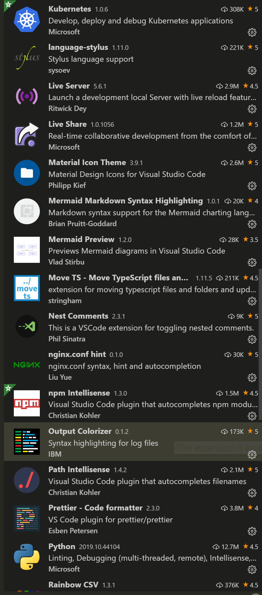
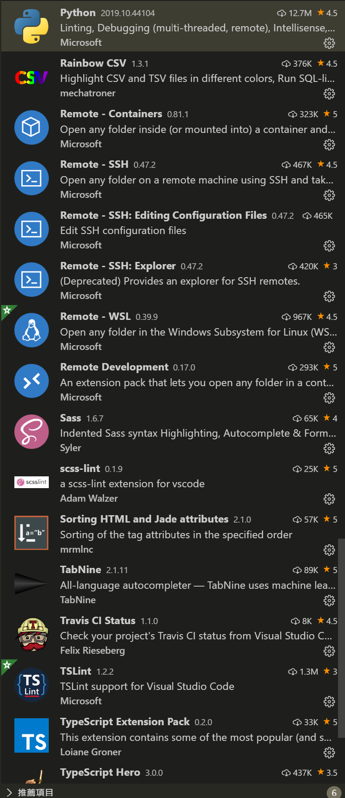
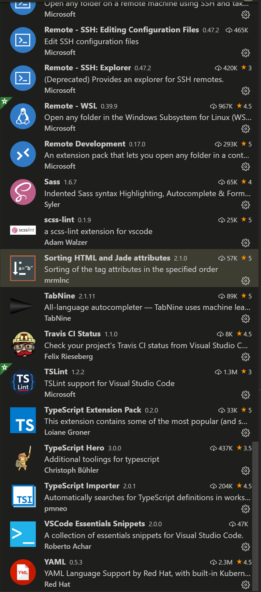
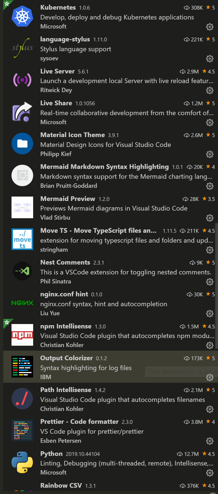
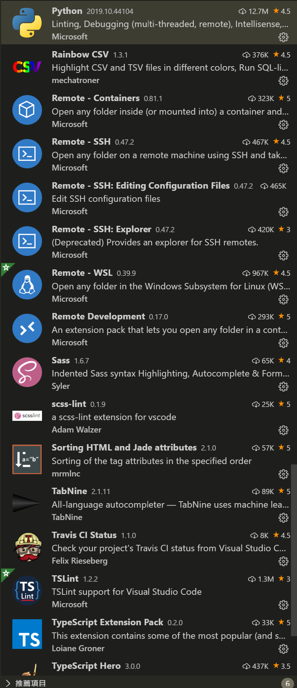
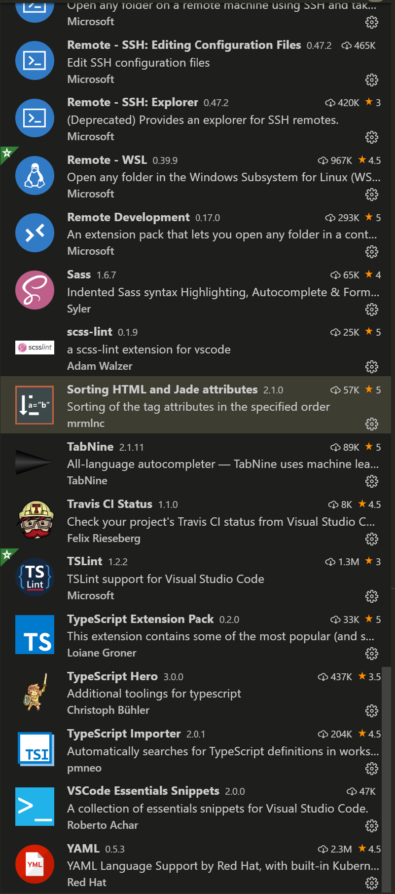
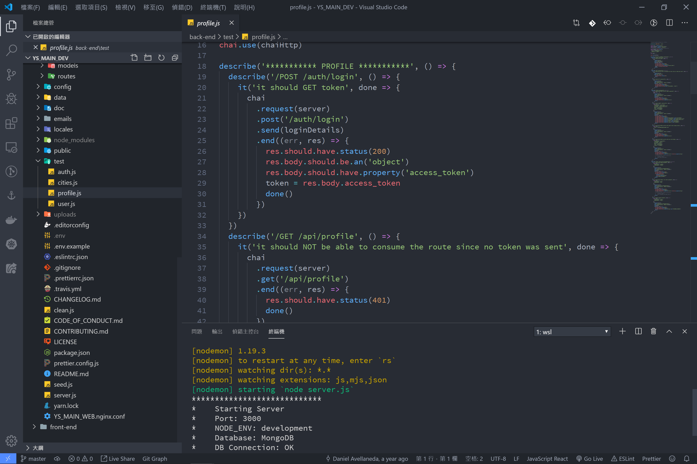

身為一位健忘的青年，為自己做筆記是十分合情合理的哈哈~
預計安裝的套件組合
我大多是使用 Javascript 與 Python 進行開發、資料庫使用 MongoDB、用 kubernetes 管理服務節點、TensorFlow 2.0 訓練學習模型…
- 作業系統 & 終端 Shell
- Windows 10 Pro
- WSL Ubuntu
- zsh
- 編輯器
- Visual Studio Code
- 運行環境
- Node.js
- Python
- 容器化管理
- Docker
- 提升效率的軟體
- Wox
- MongoDB Compass
作業系統 & 終端 Shell
Windows 10 專業版可於微軟官網購買，便可使用 MicroSoft 與 Canonical 匠心打造的 WSL，讓我們可以使用 Bash 直接操作系統~
以系統管理員身分開啟 PowerShell 主控台 (對 ‘開始’ 圖標右鍵 > PowerShell 系統管理員)，輸入以下指令
Enable-WindowsOptionalFeature -Online -FeatureName Microsoft-Windows-Subsystem-Linux接下來到 Windows 市集尋找 Ubuntu 選擇版本並安裝，過程中會問一些問題，依照需求回答即可，例如使用者帳號密碼之類的，執行檔位置會在 C:\\WINDOWS\\System32\\wsl.exe 之後編輯器的設定會用到，接下來對原生 Bash 進行一些加強，個人的習慣是使用 zsh，因為有很多方便的插件可以免費使用

先開啟 WSL 並更新它，要記得一段時間就要更新
# 更新 WSL
$ sudo apt update && sudo apt upgrade
# 安裝 zsh
$ sudo apt-get install zsh
$ which zsh
/usr/bin/zsh
# 設定 WSL 預設 Shell
$ chsh -s /usr/bin/zsh
# 確認目前使用 Shell
$ echo $SHELL重開 WSL 之後，已經換成 zsh 了，接下來換個樣式再裝個插件即可，你可以看看樣式列表挑選喜歡的樣式，看看插件列表有沒有符合需求的功能
# 安裝 materialshell
$ curl -L -o ~/.oh-my-zsh/custom/themes/materialshell.zsh-theme https://raw.githubusercontent.com/carloscuesta/materialshell/master/materialshell.zsh
# 安裝 指令補齊功能
$ git clone https://github.com/zsh-users/zsh-completions ~/.oh-my-zsh/custom/plugins/zsh-completions
# 安裝 指令建議功能
$ git clone https://github.com/zsh-users/zsh-autosuggestions ~/.oh-my-zsh/custom/plugins/zsh-autosuggestions
# 安裝 語法 highlight 功能
$ git clone https://github.com/zsh-users/zsh-syntax-highlighting.git ~/.oh-my-zsh/custom/plugins/zsh-syntax-highlighting安裝完成後要設定 zsh，設定檔位置在 ~/.zshrc，目前變更 ZSH_THEME 與 plugins 即可，
ZSH_THEME="materialshell"
plugins=(git docker docker-compose zsh-completions zsh-autosuggestions zsh-syntax-highlighting)編輯器
我使用 Vim 開發軟體好多年了，因為我一直不知道怎麼離開編輯模式XD，中途用過 Sublime text、Phpstorm、Atom，目前最順手的還是微軟的 VS Code，主要原因是我不需要 IDE 我喜歡自己搭建執行跟測試環境，以下是我的幾個設定
extensions：由 Ctrl + Shift + X 進入市集 安裝 (點選圖片可以放大)
 





settings (JSON)：由 Ctrl + Shift + P 輸入 >settings (JSON) 進入
{
"workbench.colorTheme": "Atom One Dark",
"atomKeymap.promptV3Features": true,
"editor.multiCursorModifier": "ctrlCmd",
"editor.formatOnPaste": true,
"workbench.iconTheme": "material-icon-theme",
"files.autoSave": "onFocusChange",
"editor.fontSize": 16,
"editor.tabSize": 2,
"editor.fontFamily": "'Source Code Pro', Consolas, 'Courier New', monospace",
"debug.console.fontSize": 16,
"debug.console.fontFamily": "'Source Code Pro'",
"markdown.preview.fontSize": 16,
"terminal.integrated.fontSize": 16,
"git.enableSmartCommit": true,
"eslint.autoFixOnSave": true,
"terminal.integrated.shell.windows": "C:\\WINDOWS\\System32\\wsl.exe",
"files.associations": {
"*.js": "javascriptreact"
},
"javascript.updateImportsOnFileMove.enabled": "always",
"workbench.colorCustomizations": {
"terminal.ansiYellow": "#f1eb92c5"
},
"explorer.confirmDragAndDrop": false,
"editor.formatOnType": true,
"extensions.ignoreRecommendations": false,
"emmet.triggerExpansionOnTab": true,
"terminal.integrated.rendererType": "dom",
}額外步驟，在開發 JS 的時候常常需要透過 console.log 除錯，設定一個快捷鍵 Ctrl + Shift + C 快速輸入增加效率
shortcuts (JSON)：由 Ctrl + Shift + P 輸入 >shortcuts (JSON) 進入
[
{
"key": "ctrl+shift+a",
"command": "editor.action.blockComment",
"when": "editorTextFocus && !editorReadonly"
},
{
"key": "shift+alt+a",
"command": "-editor.action.blockComment",
"when": "editorTextFocus && !editorReadonly"
},
{
"key": "ctrl+shift+c",
"command": "editor.action.insertSnippet",
"when": "editorTextFocus",
"args": {
"snippet": "console.log('${TM_SELECTED_TEXT}, ', ${TM_SELECTED_TEXT});"
}
},
{
"key": "ctrl+alt+t",
"command": "workbench.action.terminal.focusNext"
},
{
"key": "ctrl+shift+down",
"command": "-cursorDownSelect",
"when": "textInputFocus"
},
{
"key": "ctrl+shift+up",
"command": "-cursorUpSelect",
"when": "textInputFocus"
},
{
"key": "ctrl+shift+down",
"command": "editor.action.copyLinesDownAction",
"when": "editorTextFocus && !editorReadonly"
},
{
"key": "shift+alt+down",
"command": "-editor.action.copyLinesDownAction",
"when": "editorTextFocus && !editorReadonly"
},
{
"key": "ctrl+shift+up",
"command": "editor.action.copyLinesUpAction",
"when": "editorTextFocus && !editorReadonly"
},
{
"key": "shift+alt+up",
"command": "-editor.action.copyLinesUpAction",
"when": "editorTextFocus && !editorReadonly"
}
]WSL 內的 Vim 時常會用，簡單的配置一下吧
$ vim ~/.vimrc
...
set t_Co=256
set number
set smartcase
set hlsearch
syntax enable
set smartindent
set tabstop=2
set shiftwidth=2
set expandtab
...
運行環境
我的執行環境非常單純，只有 Node.js 跟 Python，如果沒有需要同時安裝不同版本的需求，可以跳過了~
Node.js
透過 nvm 我們可以隨時切換 Node.js 版本，當安裝太多不必要的套件時也可以直接清除環境，推薦安裝
# 安裝 nvm
$ curl -o- https://raw.githubusercontent.com/nvm-sh/nvm/v0.35.1/install.sh | bash
# 或
$ wget -qO- https://raw.githubusercontent.com/nvm-sh/nvm/v0.35.1/install.sh | bash
# 重整環境
$ exec $SHELL
# 列出可安裝版本
$ nvm ls-remote
# 安裝對應版本
$ nvm install 10.10.0
# 設定環境預設版本
$ nvm alias default 10.10.0
# 更多指令
$ nvm --help
# 檢查 Node.js 環境
$ node -v
v10.16.3
$ npm -v
6.9.0安裝完 nvm 後會發現 WSL 開啟速度明顯變慢，這是由於每次開啟新的 session 時 nvm 都會檢查所有版本的資料夾，這個問題可以透過設定固定版本解決，而我個人是透過延遲載入的方式解決這個問題：session 開啟時不會執行 nvm 直到我輸入關鍵字才會載入環境，通過設定 ~/.zshrc 即可
$ vim ~/.zshrc
...
# 註解掉原本的 nvm 引入
#export NVM_DIR="$HOME/.nvm"
#[ -s "$NVM_DIR/nvm.sh" ] && \. "$NVM_DIR/nvm.sh" # This loads nvm
#[ -s "$NVM_DIR/bash_completion" ] && \. "$NVM_DIR/bash_completion" # This loads nvm bash_completion
# 增加延遲載入函數
lazy_load() {
echo "Lazy loading nvm with $3 ..."
local -a names
if [[ -n "$ZSH_VERSION" ]]; then
names=("${(@s: :)${1}}")
else
names=($1)
fi
unalias "${names[@]}"
. $2
shift 2
$*
}
group_lazy_load() {
local script
script=$1
shift 1
for cmd in "$@"; do
alias $cmd="lazy_load \"$*\" $script $cmd"
done
}
# 引入延遲載入函數(請自行設定關鍵字)
export NVM_DIR="$HOME/.nvm"
group_lazy_load $HOME/.nvm/nvm.sh nvm node npm npx yarn pm2
unset -f group_lazy_load
...Python
Python 是一種跨平台的腳本語言，Python 的強大之處在於它的應用領域之廣，遍及人工智慧、科學計算、資料分析、大數據、雲端運算。實現其強大功能的前提，就是 Python 具有數量龐大且功能相對完善的標準庫和第三方庫。通過對庫的引用，能夠實現對不同領域業務的開發。然而，正是由於庫的數量龐大，對於管理這些庫以及對庫作及時的維護成為既重要但複雜度又高的事情，因此我們需要 Anaconda 幫助管理函式庫，就像 Node.js 需要 NPM 一樣
Anaconda、conda、pip 的區別
- Anaconda：包含180+的科學套件及其依賴套件的發行版本。其包含的科學套件包括：conda, numpy, scipy, ipython notebook…
- conda：套件和運行環境的管理工具，作用是快速安裝、運行和升級其依賴套件，另外可以更便捷地新增、儲存、載入和切換運行環境
- pip：用於安裝和管理函式庫的管理器
我不需要圖形化介面，所以這邊我安裝 3.6 精簡版
$ wget https://repo.anaconda.com/miniconda/Miniconda3-latest-Linux-x86_64.sh
$ ./Miniconda3-latest-Linux-x86_64.sh
# 把 conda 加入系統路徑中
$ vim ~/.zshrc
...
# 如果有類似的腳本則無需加入
# >>> conda initialize >>>
# !! Contents within this block are managed by 'conda init' !!
__conda_setup="$('/home/{YOUR_NAME}/miniconda3/bin/conda' 'shell.bash' 'hook' 2> /dev/null)"
if [ $? -eq 0 ]; then
eval "$__conda_setup"
else
if [ -f "/home/{YOUR_NAME}/miniconda3/etc/profile.d/conda.sh" ]; then
. "/home/{YOUR_NAME}/miniconda3/etc/profile.d/conda.sh"
else
export PATH="/home/{YOUR_NAME}/miniconda3/bin:$PATH"
fi
fi
unset __conda_setup
...
# 更新設定檔
$ source ~/.zshrc
$ conda -V
conda 4.7.x
# 查看安裝套件列表
$ conda list安裝完後就可以自由創建不同的 Python 運行環境了~
環境設定完成後接著安裝 Jupyter Lab，可以直觀的看到資料的走向，更方便的除錯等等…
# 更新 conda
$ conda update conda
# 啟用 基本組合
$ conda activate
# 新增 im2text 版本是 2.7 的環境
$ conda create --name im2text python=2.7
# 列出所有虛擬環境
$ conda env list
# 安裝 Jupyter Lab
$ conda install -c conda-forge jupyterlab
# 開啟 Jupyter Lab
$ jupyter lab
版本控制工具
所有的軟體或服務都是架構在快速開發、快速推出、並依市場反應快速修改，所有版本的控制十分重要，學會 Git 這個版本控制界的老大還是非常重要滴，不需要特別安裝 WSL 預設就有了~
# 基本設定
$ git config --global user.name [Your_Name]
$ git config --global user.email [Your_Email]容器化管理
有過開發微服務經驗的人都知道同一份程式碼在不同環境裡就會有不同的結果(T_T)，所以把統一整個環境是個既安全又聰明的選擇，因此早早學會容器化管理、強身又健體
Docker 是開放原始碼的專案，將程式自動化部署為可攜式且可自足的容器，在雲端或內部部署上執行。不同於大部分的應用程式， Docker 是一個系統層面的應用程式，這代表 Docker 需要更加底層的系統存取權限，因此我們需要開啟 Windows Hyper-V 賦予 Docker 操作權限
以系統管理員身分開啟 PowerShell 主控台 (對 ‘開始’ 圖標右鍵 > PowerShell 系統管理員)，輸入以下指令
Enable-WindowsOptionalFeature -Online -FeatureName Microsoft-Hyper-V -All接著到官網v下載 Windows 版的 Docker 並安裝，並且在設置處開啟 expose daemon、開啟 kubernetes，minikube 自行安裝即可~

完成後到 WSL 安裝 docker.io、kubectl，開始搭建服務節點吧🎉🎉
$ sudo apt update
$ sudo apt install docker.io kubectl
$ sudo usermod -aG docker $USER
# 增加 Docker 路徑變數
$ vim ~/.zshrc
...
# docker for wsl
export DOCKER_HOST=127.0.0.1:2375
...
# 檢查 Docker 版本
$ docker version提升效率的小工具
- 微軟近年來的轉變與成長(尤其是股價)大家有目共睹，愈來愈重視社群的聲音，但身為一個多年的 Macbook 用戶，還是習慣把 Ctrl 跟 Alt 互換位置，不然一段時間後小妞妞會比檸檬還酸阿😱，用 sharpkey 來更改按鍵位置吧

- Wox 是一款模仿 Finder 的工具，用慣 Mac 的朋友可以試試

- 相對於冰冷冷的文字 Emoji 可以更貼近的表示語言的溫度，在 Windows 輸入時按下
Win + .就可以選擇囉
恭喜🎉現在已經有一個可以快樂開發的環境了🎉